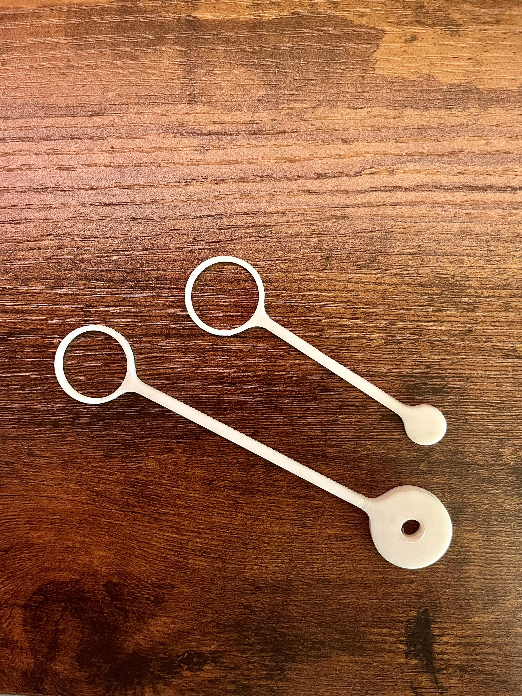
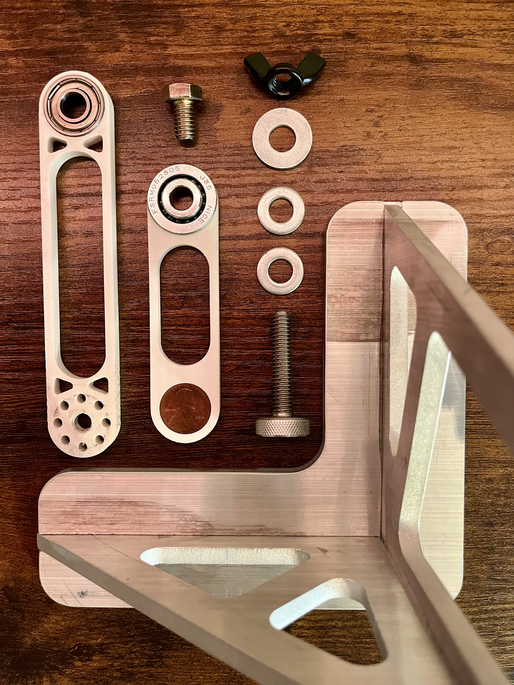
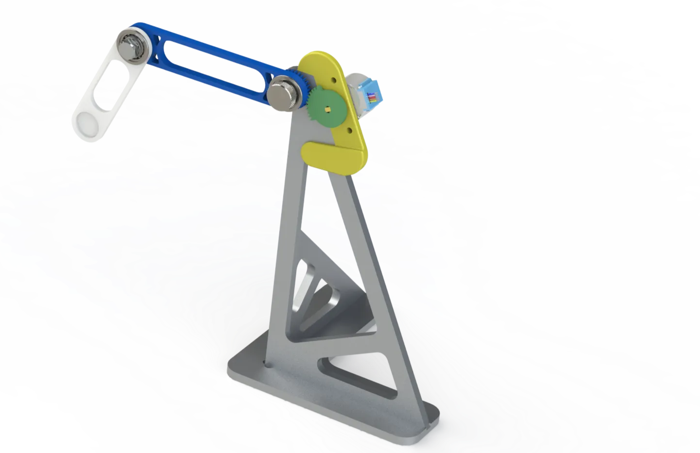

personal_projects
double_pendulum_fixture
I created a semi-continuously operating double pendulum for use as a demonstration of chaotic motion for my dynamics class. This project allowed me to take the concepts learned in class and create a real-life model while also getting to better my skills using SolidWorks, 3D printing, Waterjet, CNC machining, and Arduino.
v1 Concept assembly animation (SolidWorks)
v3 Assembly operation

v1 Arm 3D print

v2 Part layout
v2 Assembly operation

v3 Assembly render (SolidWorks)